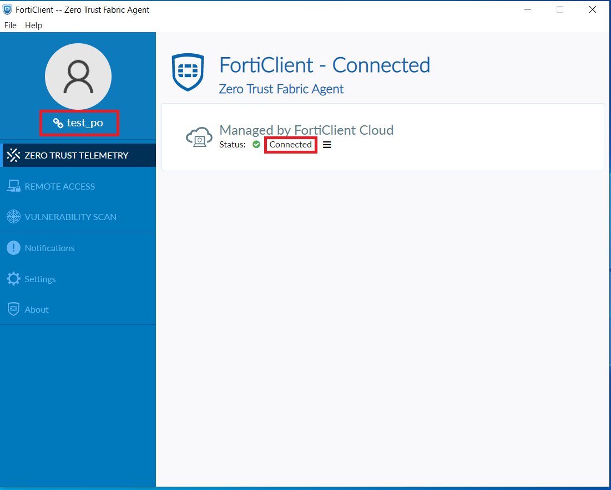
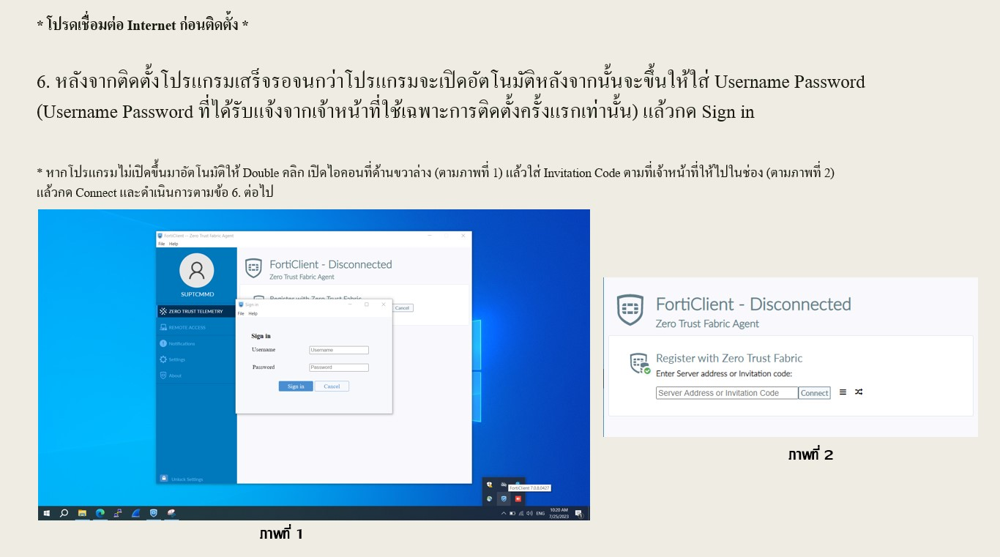
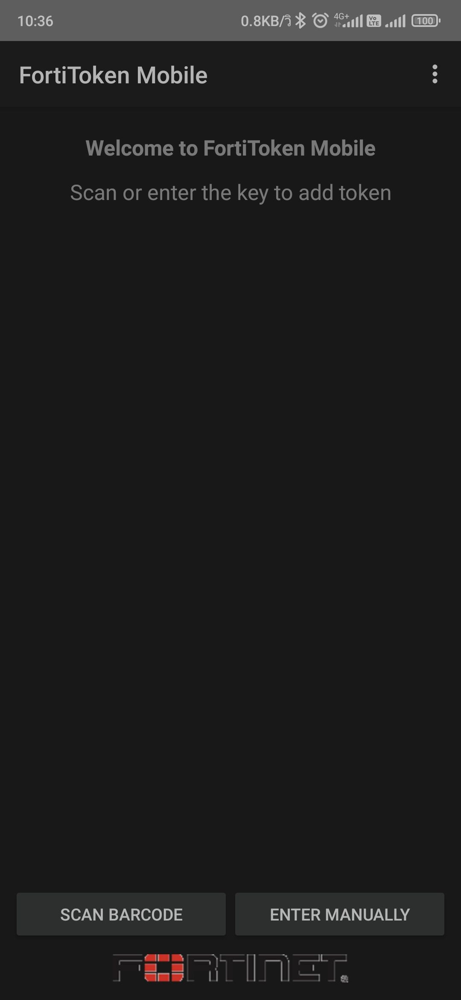
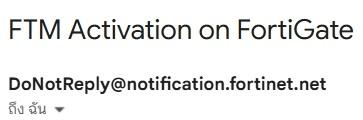

วิธีแก้ไขปัญหาเบื้องต้น
-
เชื่อมต่อ VPN ได้แล้ว แต่ไม่สามารถเข้าใช้ระบบงานได้ คลิก เพื่อดูวิธีตรวจสอบเบื้องต้น
ในกรณีที่เชื่อมต่อ VPN ได้แล้ว แต่ไม่สามารถเข้าใช้งานระบบงานได้ สามารถทำการตรวจสอบดังนี้ - ตรวจสอบ ZERO TRUST TELEMETRY ว่าสถานะ Connected หรือไม่ และ ชื่อถูกต้องหรือไม่  **หากตรวจสอบแล้วไม่ถูกต้องกรุณาดำเนินการตามนี้**  - หลังจากดำเนินการแล้ว ZERO TRUST TELEMETRY ต้องขึ้นสถานะ Connected และ แสดงชื่อถูกต้องตามรูปแบบ ตามภาพแรก
หากดำเนินการแล้วยังไม่สามารถใช้งานได้หรือสอบถามเพิ่มเติมติดต่อที่ LINE: THP VPN ID: @961ugpvt
-
กรณีที่ต้องการ ติดตั้ง Token ใหม่
- กรณีที่เปิด Forti Token แล้ว ไม่พบ Token ตามภาพด้านล่าง หรือ เปลี่ยนเครื่องใหม่ หรือ ติดตั้งแอป Forti Token ใหม่ 
**(แจ้งที่ IDLine:@961ugpvt เพื่อขอ QR CODE สำหรับลงทะเบียน Forti Token ใหม่ได้เลย)**
- หลังจากได้รับ QR CODE ทางเมลแล้วให้ทำการกดปุ่ม SCAN BARCODE จากแอป Forti Token แล้วสแกน QR CODE เป็นอันเสร็จสิ้นโดยเมลที่ส่งให้มีชื่อเรื่อง FTM Activation on FortiGate และส่งจาก DoNotReply@notification.fortinet.net เท่านั้น (ตามภาพด้านล่างนี้)

×

Double click to zoom